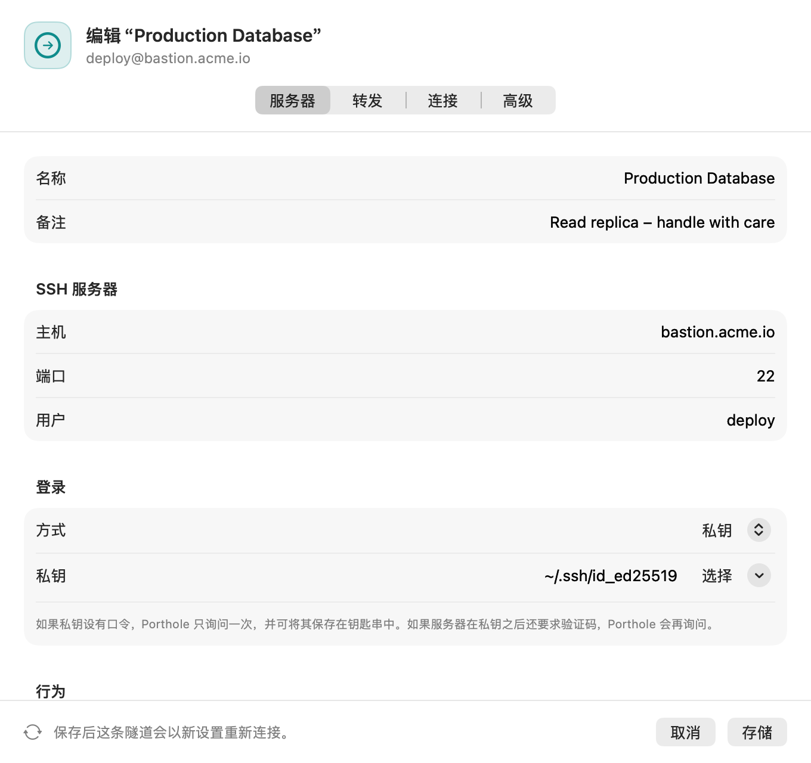
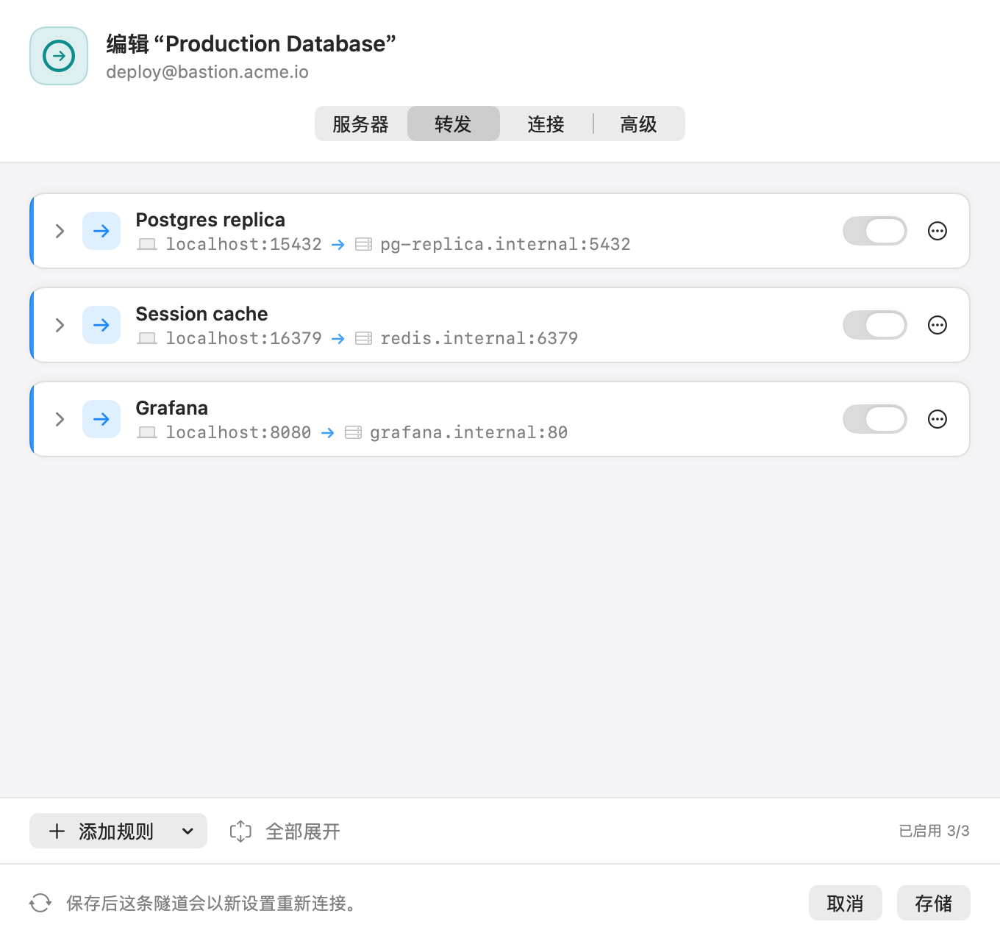
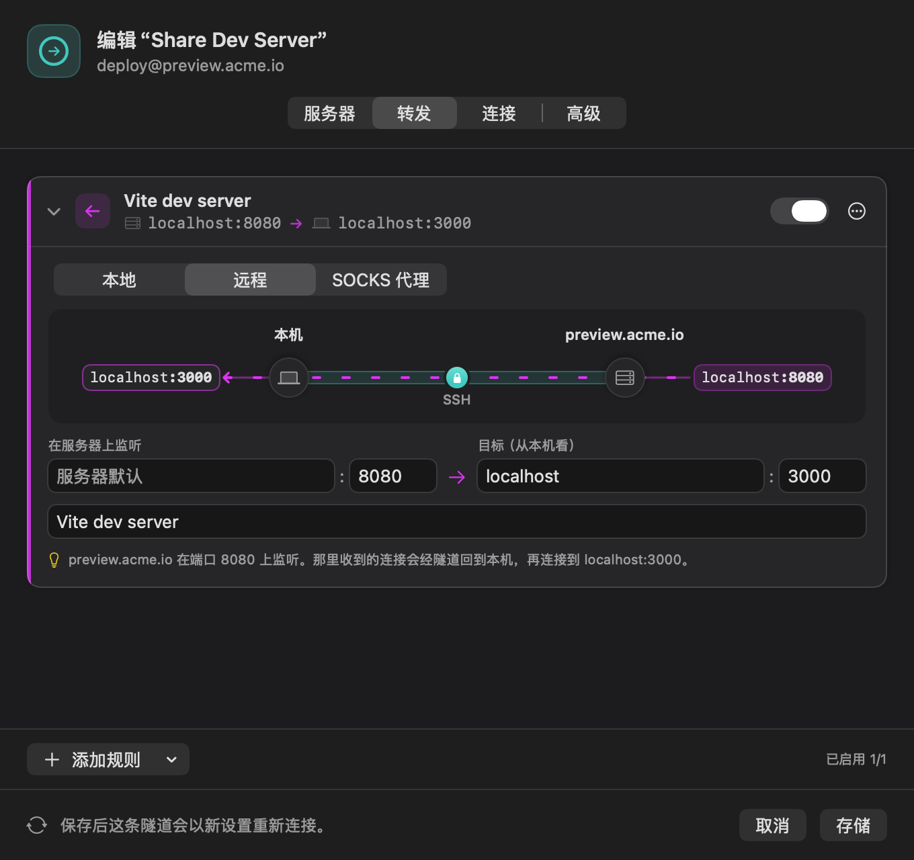
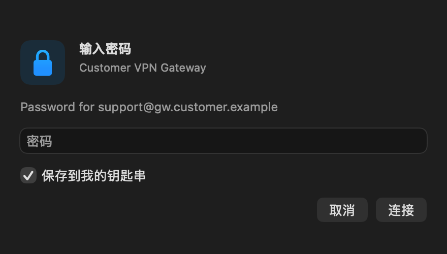
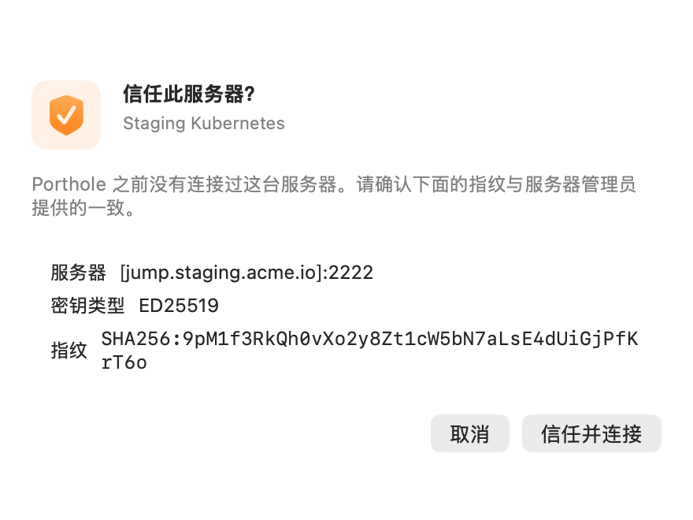
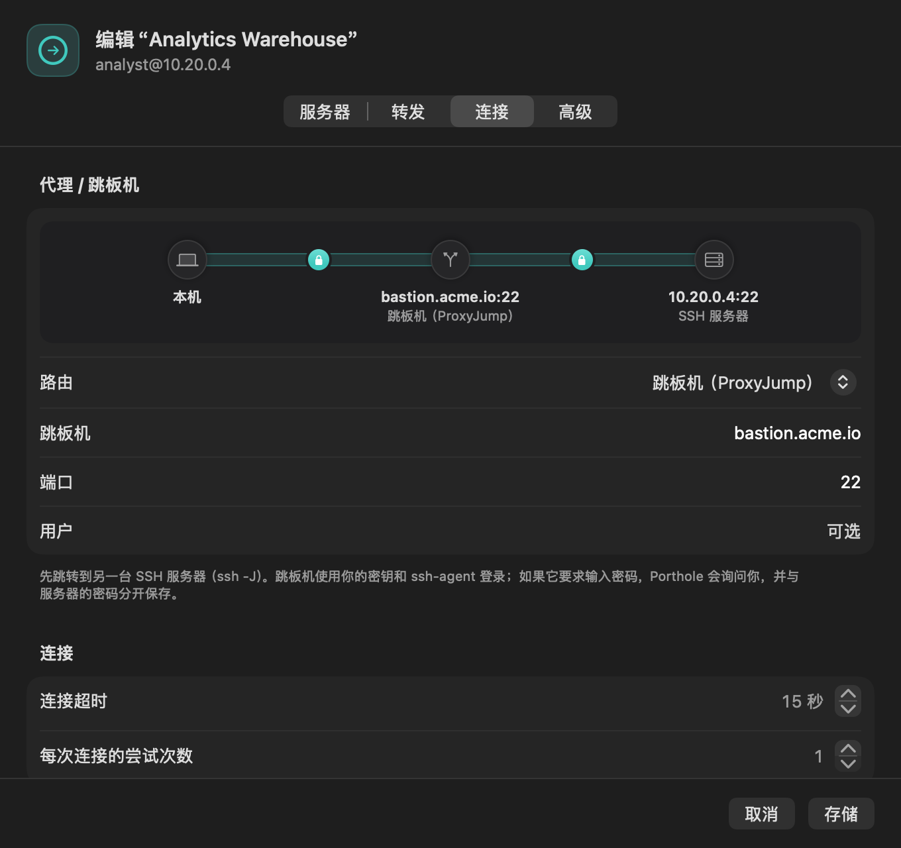
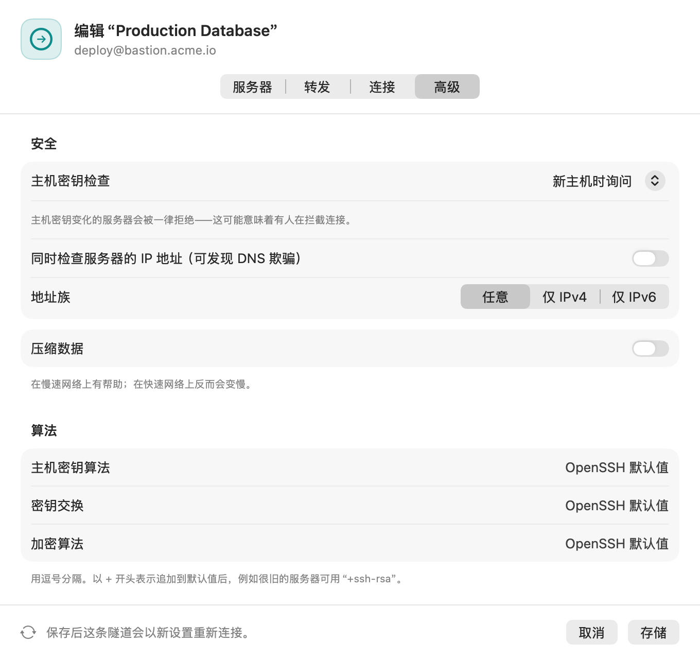
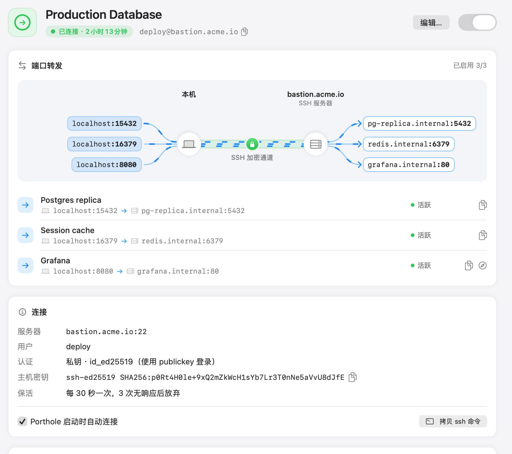
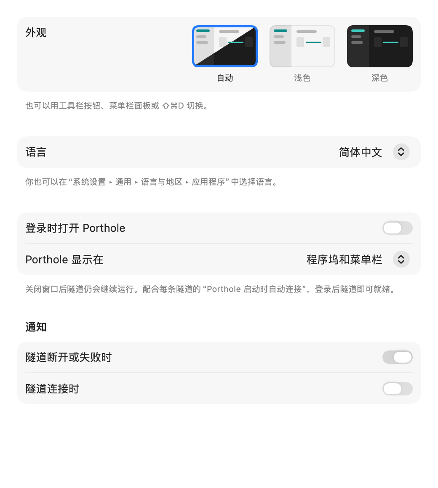

安装
系统要求
- macOS 14 Sonoma 或更新版本。
- Apple 芯片的 Mac（M1 及之后的机型）。Porthole 是原生 arm64 应用，不能在 Intel Mac 上运行。
- 不需要另外安装任何东西。Porthole 驱动的是 macOS 自带的 OpenSSH 客户端
/usr/bin/ssh，它随系统更新。
下载与安装
- 在下载页下载
Porthole-1.0.0.zip（1.3 MB）。 - 双击 zip 解压，得到 Porthole.app。
- 把 Porthole.app 拖进“应用程序”文件夹。
第一次打开
Porthole 目前使用临时签名，没有经过 Apple 公证。第一次打开从网上下载的这类应用时，macOS 会拦下它，并提示无法验证开发者。按下面的步骤放行一次，以后就能正常打开：
- 双击 Porthole，看到提示后点“完成”关闭它。
- 打开 系统设置 ▸ 隐私与安全性，滚动到页面下方的“安全性”部分。
- 找到关于 Porthole 被阻止的提示，点旁边的“仍要打开”。在随后的对话框里再点一次“仍要打开”，并输入登录密码确认。
熟悉终端的话，也可以直接移除下载时附加的隔离标记，效果相同：
xattr -dr com.apple.quarantine /Applications/Porthole.app在 macOS 14 上，也可以按住 Control 键点按 Porthole，在菜单里选“打开”。macOS 15 起这个方法不再有效，请使用上面的步骤。
校验下载文件
在终端里计算 zip 的 SHA-256，结果应该与下面这串一致：
shasum -a 256 ~/Downloads/Porthole-1.0.0.zip697bc77d141e89e911210e3e66555268139e87e73b49bc40207f2b5a9a1430f6
创建第一条隧道
假设数据库 db.internal:5432 只能从跳板服务器 bastion.acme.io 访问。下面把它接到你 Mac 的 localhost:15432 上。
-
按 ⌘N，或点工具栏上的 +。第一次打开时，也可以点欢迎页上的“创建隧道”。
-
在“服务器”页填写名称（随你，例如“生产数据库”）、主机
bastion.acme.io、端口22和用户deploy。登录方式先保持“自动（代理和密钥）”：它会用上 ssh-agent、~/.ssh里的密钥和~/.ssh/config。
-
切到“转发”页，点“添加规则”。类型选“本地”，在本机监听
localhost:15432，目标（从服务器看）填db.internal:5432。上方的小图会实时显示这条规则的走向，下面还有一句白话解释。
-
点“创建并连接”。第一次连接这台服务器时，Porthole 会显示它的指纹，核对无误后点“信任并连接”（见服务器指纹）。
-
连上以后，在数据库客户端里连接
localhost:15432就行了。
想让隧道开机就绪：在“服务器”页勾选“Porthole 启动时自动连接”，再到 设置 ▸ 通用 打开“登录时打开 Porthole”。关闭主窗口后，隧道仍会继续运行。
转发规则
一条隧道可以放任意多条规则，它们共用同一个 SSH 连接。每条规则卡片右上角都有开关，可以单独停用；停用的规则在图示里会变淡。规则的类型随时可以切换。
本地转发 ssh -L
在本地端口访问远程服务。本机应用连接“在本机监听”的端口，流量经 SSH 服务器转发，再由服务器连接到目标。
- 在本机监听
- 地址和端口，例如
localhost:15432。 - 目标（从服务器看）
- 服务器能访问到的主机和端口，例如
db.internal:5432。这里写localhost，指的是服务器自己。
ssh -N -L 15432:db.internal:5432 deploy@bastion.acme.io远程转发 ssh -R
把本机服务分享给服务器。服务器在指定端口上监听，那里收到的连接会经隧道回到你的 Mac，再连接到目标。常用来把开发中的网页给同事看，或接收 webhook 回调。
- 在服务器上监听
- 留空表示服务器默认，只在服务器自己的 localhost 上监听；端口例如
8080。 - 目标（从本机看）
- 你 Mac 上的服务，例如
localhost:3000。
ssh -N -R 8080:localhost:3000 deploy@preview.acme.io
- 想让其他机器也能访问服务器上的这个端口，需要服务器的 sshd 设置
GatewayPorts clientspecified，并在“在服务器上监听”里填0.0.0.0或*。 - 只有以 root 登录时，才能打开 1024 以下的远程端口。
- 远程端口在服务器上已被占用时，服务器会拒绝，Porthole 会提示“服务器拒绝打开远程端口”。
SOCKS 代理 ssh -D
通过服务器上网。本机在指定端口上运行一个 SOCKS4/5 代理。把浏览器或应用指向它，所有连接都会从 SSH 服务器出去，适合访问只对服务器开放的网站和内网地址。
- 在本机监听
- 例如
localhost:1080。
设好之后，在应用里把代理设为 SOCKS5、localhost:1080。例如在终端里：
curl --socks5-hostname localhost:1080 https://intranet.acme.io让域名也在服务器那边解析（curl 的 --socks5-hostname，或浏览器里的“通过 SOCKS 代理 DNS”），才能访问只在内网 DNS 里存在的地址。
预设
“添加规则”旁边的菜单里有常用预设，选一个再填目标主机即可：
| 预设 | 类型 | 端口 |
|---|---|---|
| PostgreSQL | 本地 | 5432 → 5432 |
| MySQL / MariaDB | 本地 | 3306 → 3306 |
| Redis | 本地 | 6379 → 6379 |
| MongoDB | 本地 | 27017 → 27017 |
| Web 应用 | 本地 | 8080 → 80 |
| 远程桌面 | 本地 | 3389 → 3389 |
| VNC / 屏幕共享 | 本地 | 5901 → 5900 |
| 分享本地开发服务器 | 远程 | 服务器 8080 → 本机 3000 |
监听地址
localhost（默认）：只有这台 Mac 上的程序能连接。0.0.0.0或*：局域网里的其他设备也能连到你 Mac 的这个端口。只在确实需要时使用。- 也可以填这台 Mac 某个网卡的 IP 地址。
连接之前，Porthole 会检查本地端口是否已被占用，被占用时会指出是哪个进程和它的 PID。同一条隧道里两条规则用了同一个端口，也会直接提示。
登录方式
在“服务器”页的 登录 ▸ 方式 里选择：
- 自动（代理和密钥）
- 默认方式。使用 ssh-agent、
~/.ssh里的密钥和~/.ssh/config。如果服务器仍要求密码，Porthole 会询问你。 - 密码
- 可以直接填在这里，也可以留空，每次连接时再询问。
- 私钥
- 选择私钥文件，例如
~/.ssh/id_ed25519。私钥设有口令时，Porthole 只问一次，可以保存在钥匙串里。如果服务器在私钥之后还要验证码，Porthole 会再询问。 - 键盘交互 / 双重认证
- 适用于需要一次性验证码或其他提示的服务器。Porthole 会把服务器的每个问题逐一显示给你。

询问密码的对话框里勾选“保存到我的钥匙串”，下次就不用再输。所有密码和口令都只保存在 macOS 钥匙串里，不会写进 Porthole 的设置文件，也不会出现在导出文件中。
服务器指纹
第一次连接一台服务器时，Porthole 会弹出“信任此服务器？”，显示服务器地址、密钥类型和 SHA256 指纹。请和服务器管理员给你的指纹核对，一致再点“信任并连接”。

在 高级 ▸ 安全 ▸ 主机密钥检查 里可以换一种策略：
- 新主机时询问
- 默认。如上所述，每台新服务器都先让你确认。
- 自动信任新主机
- 第一次连接时直接记住服务器的密钥，相当于 OpenSSH 的
accept-new。 - 仅限已知主机
- 只连接
~/.ssh/known_hosts里已有的服务器。
无论选哪种，主机密钥变化的服务器一律拒绝，因为这可能意味着有人在拦截连接。如果你确认服务器只是重装了系统，先删掉旧记录再连接：
ssh-keygen -R bastion.acme.io服务器不在 22 端口时，写成 ssh-keygen -R "[bastion.acme.io]:2222"。
勾选“同时检查服务器的 IP 地址”后，OpenSSH 还会核对 IP 地址，可以发现 DNS 欺骗。
代理与跳板机
在“连接”页的 代理 / 跳板机 ▸ 路由 里选择怎样到达 SSH 服务器。页面顶部的路线图会显示 本机 → 代理或跳板机 → 服务器。

- 直接连接
- 直接连 SSH 服务器。
- 跳板机（ProxyJump）
- 先连到另一台 SSH 服务器，再从那里连到目标服务器，相当于
ssh -J。跳板机用你的密钥和 ssh-agent 登录；如果它要求密码，Porthole 会询问，并与目标服务器的密码分开保存。 - SOCKS5 / SOCKS4 代理
- 经 SOCKS 代理连接，默认端口 1080。在严格的防火墙后面很有用，甚至可以经由另一条 Porthole SOCKS 隧道，例如
localhost:1080。 - HTTP 代理（CONNECT）
- 经支持 CONNECT 的 HTTP 代理连接，默认端口 8080。
代理需要用户名和密码时，填好用户并勾选“代理需要密码”，密码同样保存在钥匙串里。
连接与保活
“连接”页：
- 连接超时
- 默认 15 秒，可设 3 到 120 秒。
- 每次连接的尝试次数
- 默认 1 次。只在服务器宕机或无法访问时生效，服务器主动拒绝连接时不会重试。
- 保活
- 默认每 30 秒一次，3 次无响应后判定断开，也就是大约 90 秒能发现失效的连接，随后 Porthole 自动重连。设为“关”时，失效的连接可能很久都不会被发现。
- 网络接口
- 只有这台 Mac 同时连着多个网络（例如 Wi-Fi 和 VPN）时才需要指定。
“服务器”页的 行为：
- Porthole 启动时自动连接
- 打开 Porthole 时自动连接这条隧道。
- 连接断开时自动重连
- 默认打开。重试间隔依次为 2、4、8、16、30 秒，之后每 30 秒一次；连接稳定一段时间后重新计数。Mac 从睡眠中唤醒、网络恢复后，Porthole 也会主动刷新隧道。
修改正在运行的隧道并存储后，它会用新设置重新连接。
高级选项

- 地址族
- 任意、仅 IPv4 或仅 IPv6。
- 压缩数据
- 在慢速网络上有帮助，在快速网络上反而会变慢。
- 算法
- 主机密钥算法、密钥交换和加密算法。留空使用 OpenSSH 默认值。用逗号分隔；以
+开头表示追加到默认值之后，例如很旧的服务器可在“主机密钥算法”里填+ssh-rsa。 - 使用 ~/.ssh/config 中的设置
- 默认打开。这台主机在
~/.ssh/config里的设置（例如 IdentityFile、ProxyJump）会一起生效。 - 额外的 ssh 选项
- 每行一个，例如
IPQoS throughput。会以-o选项传给 ssh，并优先于上面的设置。 - 命令预览
- 显示 Porthole 实际执行的完整 ssh 命令。排查问题时可以拷贝到终端里，加上
-v运行。
日常使用
主窗口与路线图示
左边是隧道列表，上方是搜索框和过滤标签（全部、活跃、自动启动和你的智能分组）。每条隧道右侧的开关就是连接和断开。右边显示选中隧道的状态、端口转发图示和每条规则的实时状态；规则右侧可以拷贝地址，网页类的规则还能直接在浏览器中打开。

每条隧道画成一个“领结”：
- 左边是本机这一侧的地址，右边是服务器那一侧，所有规则汇入中间同一条 SSH 加密通道。
- 实心标签是连接进来的监听端口，空心标签是最终到达的地址。箭头和流动的光点表示数据方向，远程转发是从服务器流回本机。
- 颜色表示状态：转发生效时按类型着色（本地蓝、远程紫、SOCKS 青），启动中为橙色，未连接为灰色虚线，停用的规则变淡。
- 通道中间的锁在连上时变绿，失败时变成红色的 ✕。经代理或跳板机时，通道下方会标出“经由 …”。
菜单栏
菜单栏里的小舷窗显示整体状态：内圈空心表示全部未连接，半满表示正在连接，填满表示有隧道已连接，带斜线表示有隧道连接失败。
点开面板，可以单独开关每条隧道，或者全部连接、全部断开；右上角可以切换浅色和深色，也能打开设置。
关闭主窗口后隧道仍会继续运行。在 设置 ▸ 通用 ▸ Porthole 显示在 里选“仅菜单栏”，Porthole 就不会出现在程序坞里。

搜索与智能分组
搜索框按名称、主机和端口过滤。常用的过滤条件可以存成智能分组：点过滤标签旁边的 +，或选择 文件 ▸ 新建智能分组…（⌥⌘N），填写名称和关键词（用空格分隔）。名称、备注、主机或端口中包含全部关键词的隧道都会出现在这个分组里。
日志
选择 隧道 ▸ 显示日志（⌘L）查看这条隧道的连接过程，可以拷贝或清空。OpenSSH 自己的原始输出保持英文；常见的错误和断线原因会翻译成对应语言的提示。
快捷键
| 新建隧道 | ⌘N |
| 新建智能分组 | ⌥⌘N |
| 连接所选隧道 | ⌘R |
| 断开所选隧道 | ⌘. |
| 全部连接 | ⌥⌘R |
| 全部断开 | ⌥⌘. |
| 编辑 | ⌘E |
| 复制隧道 | ⌘D |
| 拷贝 SSH 命令 | ⇧⌘C |
| 显示日志 | ⌘L |
| 删除 | ⌘⌫ |
| 导入隧道 | ⇧⌘I |
| 导出所选隧道 | ⇧⌘E |
| 切换浅色/深色 | ⇧⌘D |
| 设置 | ⌘, |
导入与导出
从 SSH Tunnel 迁移
Codinn 的 SSH Tunnel 只有 Intel 版本，在以后的 macOS 上将无法运行。Porthole 能导入它的导出文件：
- 在旧版 SSH Tunnel 里全选隧道，选择 File ▸ Export Selected Tunnels… 导出。
- 在 Porthole 里选择 文件 ▸ 导入隧道…（⇧⌘I），选中刚才的文件。
- 导出文件不含密码。第一次连接时 Porthole 会询问，勾选“保存到我的钥匙串”即可。
原版导出文件的格式没有公开文档，Porthole 按已知的字段做了宽松解析。导入后请逐条检查一遍。
从 ~/.ssh/config 导入
选择 文件 ▸ 从 ~/.ssh/config 导入。只会导入带有 LocalForward、RemoteForward 或 DynamicForward 的 Host 条目，导入的隧道会继续使用 ~/.ssh/config 中各主机的设置。例如：
Host db-tunnel
HostName bastion.acme.io
User deploy
LocalForward 15432 db.internal:5432导出与备份
选择 文件 ▸ 导出所选隧道…（⇧⌘E）或 导出全部隧道…。在 设置 ▸ 数据 里也可以导出全部隧道和智能分组。导出文件不包含密码，密码只保存在你的钥匙串中；在另一台 Mac 上导入后，第一次连接时输入即可。
设置
选择 Porthole ▸ 设置…（⌘,）。
- 通用
- 外观（自动、浅色、深色）；界面语言，改完点“立即重启”生效；登录时打开 Porthole；Porthole 显示在程序坞和菜单栏、仅程序坞或仅菜单栏；隧道断开或失败时、隧道连接时是否通知。
- 高级
- Mac 从睡眠中唤醒后刷新隧道；ssh 可执行文件，默认
/usr/bin/ssh，需要时可以换成 Homebrew 安装的版本，例如/opt/homebrew/bin/ssh。 - 数据
- 从 SSH Tunnel 或
~/.ssh/config导入，导出全部隧道和智能分组，以及设置文件的位置（可以在访达中显示）。

界面支持 10 种语言：English、简体中文、繁體中文、日本語、한국어、Deutsch、Français、Español、Português (Brasil)、Русский。默认跟随系统，也可以在 系统设置 ▸ 通用 ▸ 语言与地区 ▸ 应用程序 里给 Porthole 单独指定。
常见问题
提示“端口 15432 已被某个进程占用”
另一个程序正在使用这个本地端口，常见的是另一条隧道、本机运行的数据库，或者别处启动的 ssh。提示里会写出进程名和 PID。退出那个程序，或者把规则的本机端口换一个（例如 15433）。也可以自己查看：
lsof -nP -iTCP:15432 -sTCP:LISTEN服务器拒绝登录
检查用户名是否正确。用私钥登录时，确认对应的公钥已加入服务器的 ~/.ssh/authorized_keys；用“自动”方式时，运行 ssh-add -l 看看 ssh-agent 里有没有密钥。在 高级 ▸ 命令预览 里拷贝命令，加上 -v 在终端里运行，可以看到完整的登录过程。
提示“服务器的主机密钥已变化”
Porthole 不会连接主机密钥变化的服务器。先向管理员确认服务器是否重装或更换过密钥；确认无误后，用 ssh-keygen -R 主机名 删除旧记录再连接（见服务器指纹）。
提示“与服务器没有共同支持的算法”
通常是很旧的服务器。在 高级 ▸ 算法 里追加它支持的算法，例如在“主机密钥算法”里填 +ssh-rsa。能升级服务器的话，升级更好。
提示“服务器拒绝打开远程端口”
这个端口在服务器上已被占用（可能是之前没断干净的会话），或者端口号小于 1024 而你不是以 root 登录。在服务器上用 ss -ltnp 查看谁占着端口，或者换一个端口。
合上盖子以后隧道断了
Mac 睡眠时网络会断开。唤醒后 Porthole 会自动刷新隧道，开着“连接断开时自动重连”的隧道会自己连回来。
提示“ssh 不接受这些设置”
检查 高级 ▸ 额外的 ssh 选项 里有没有拼错的选项，以及 ~/.ssh/config 里这台主机的设置。
打不开 Porthole，提示无法验证开发者
见第一次打开。
问题还是没有解决
到 GitHub Issues 提交问题，附上 Porthole 和 macOS 的版本，以及日志里相关的几行（发出前删掉服务器地址等敏感信息）。Porthole 是开源软件，源代码在 github.com/bryan31/porthole，也欢迎直接提交改进。
数据位置与卸载
- 隧道配置
~/Library/Application Support/Porthole/tunnels.json- 密码和口令
- macOS 钥匙串，名称为 Porthole 的项目。可以在“钥匙串访问”里搜索 Porthole 找到。
- 服务器指纹
- 和终端里的 ssh 共用
~/.ssh/known_hosts。
卸载 Porthole：
- 在 设置 ▸ 通用 里关掉“登录时打开 Porthole”。
- 退出 Porthole，所有隧道会随之断开。
- 把“应用程序”文件夹里的 Porthole.app 移到废纸篓。
- 如果也想清除数据，删除
~/Library/Application Support/Porthole文件夹，并在“钥匙串访问”里删除名为 Porthole 的项目。